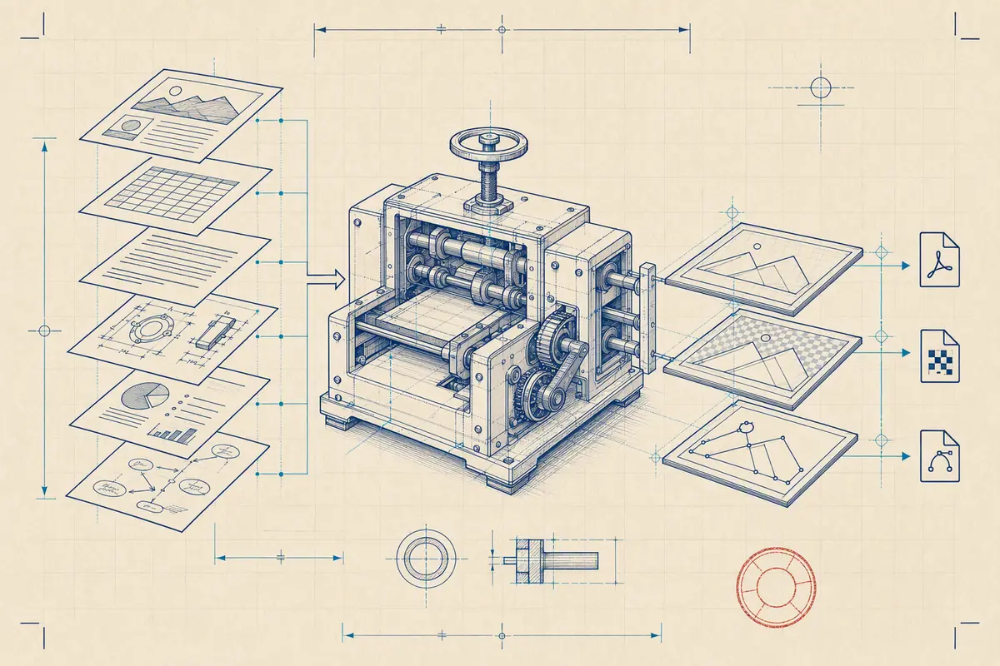

01 Batch contract
Every source.
One export rule.
Put your existing converters behind one manifest. Get deterministic names, isolated jobs, and a complete failure report your CI can trust.
Reading the signed release sheet…
- Shells
- none
- Telemetry
- none
- Report
- JSON · always

02 The run
A release routine you can inspect.
The CLI wraps mature tools instead of pretending to replace them. Each stage has a sharp boundary and a recorded result.
-
01
Validate
Resolve inputs, converter licenses, placeholders, and output collisions before work begins.
batch-artifact-export check -
02
Stage & run
Copy sources read-only, invoke arguments directly, and isolate on Linux when Bubblewrap is present.
run --jobs 4 -
03
Promote & report
Move only successful outputs into place. Record hashes, exit codes, stderr, and every failure.
exports/report.json
03 Manifest inspection
Draft the batch once.
This browser preflight catches common structural mistakes. Your text stays in this tab; the CLI remains the authoritative validator.
No upload. No local storage. Tab inserts two spaces.
INSPECTION NOTES
Sheet ready to inspect
Run the structural check to review converters, artifacts, and required fields.
04 Installation plate
One verified step to your PATH.
Choose a platform. Installers fetch the matching GitHub Release asset, verify SHA-256, and print every filesystem change.
TERMINAL · VERIFIED INSTALLER
curl -fsSL https://batch-artifact-export.sociobot.in/install.sh | shInstalls to /usr/local/bin, or ~/.local/bin without write access. Supports Linux x86-64 and macOS universal.
POWERSHELL · VERIFIED INSTALLER
irm https://batch-artifact-export.sociobot.in/install.ps1 | iexInstalls the portable executable to your local application data directory and adds it to your user PATH. The v0.1 binary is unsigned.
Homebrew
brew install B-Divyesh/batch-artifact-export/batch-artifact-exportScoop
scoop bucket add batch-artifact-export https://github.com/B-Divyesh/sf-batch-artifact-export
scoop install batch-artifact-exportLinux packages
Download the signed-checksum .deb or .rpm from the current release.
Builds are reproducible in public GitHub Actions. macOS and Windows packages are not code-signed in v0.1; verify the published checksum.
05 Failure accounting
If one plate jams, CI knows which one.
Every run writes one stable report in manifest order—even when the manifest is invalid. Successful files keep their source and output hashes; failures carry the converter's exit code and bounded logs.
- Outputs promoted only after success
- Duplicate names rejected before execution
- Converter license and homepage disclosed
{
"outcome": "failed",
"succeeded": 99,
"failed": 1,
"artifacts": [{
"source": "diagrams/auth.drawio",
"status": "failed",
"exit_code": 7,
"error": "converter exited with code 7"
}]
}